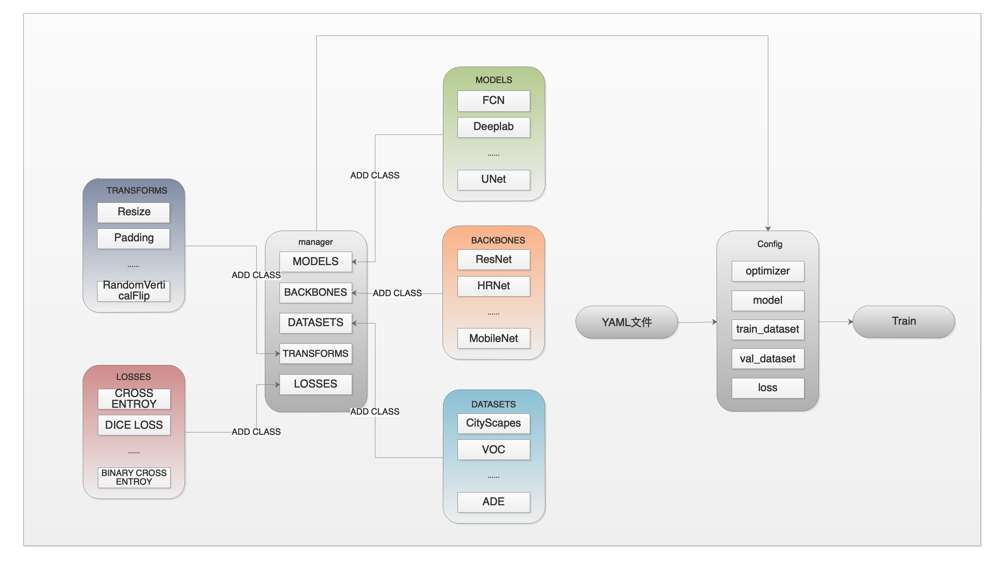
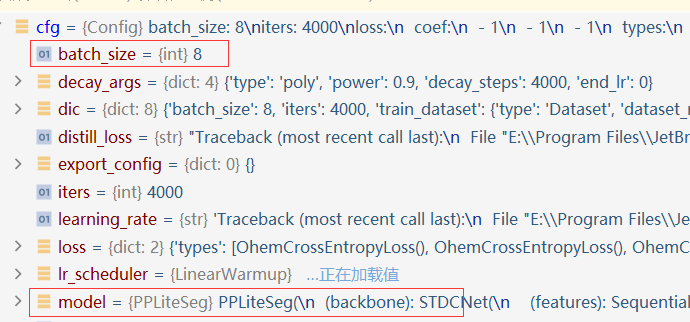

Paddleseg使用指南
PaddleSeg使用指南
PaddleSeg是一个基于Paddle二次开发的一个专门用于搞语义分割的程序框架，相比与之前自己训练语义分割模型时，每复现一个模型都得新建一个工程，从DataSets开始重构，这十分麻烦，这也是这个框架存在的意义，它相当于搭建了一个语义分割炼丹炉，训练各个模型都可以在这个框架里面进行。官方提供了许多模型可以使用，自己也可以自己写模型并用该框架训练和推理，不过前提是非常了解该框架。因此我们需要深究它的源码。

一、PaddleSeg能用Config文件来配置如何训练的原理
PaddleSeg实现读取config文件来创建模型、数据集主要是通过这2个模块：
1 | from paddleseg.cvlibs import manager, Config |
1.PaddleSeg中的核心组件——Manager类
导入manager模块时会创建图中manage方框中的5个ComponentManager类的全局变量。他们分别是MODELS、BACKBONES、DATASETS、TRANSFORMS和LOSSES。
这5个ComponentManager类的全局变量类似字典，包含了能通过Config创建的所有对象的类型。ComponentManager是一个[str,
1 | print(model_manager.components_dict) |
所有需要用Config来加载的东西(不管是模型还是数据集)都得在对应的ComponentManager实例里面注册。比如自己写了一个模型，则需要在该类的上方加上@manager.MODELS.add_component，把这个类注册到全集变量MODELS里面
2.PaddleSeg中的核心组件——Config类
PaddleSeg如果要使用.yaml文件来快速配置的话，必须创建一个Config类的对象，它用于解析.yaml文件，并根据里面的内容来从5个ComponentManager类的全局变量里面查找是否包含.yaml写的那个对象，如果有的话，就直接创建该类的实例，并作为config对象的一个成员变量，没的话就会报错。
1 | cfg = Config(yaml_cfg_path) |

在Config类的源码注释中，告诉我们了.yaml文件各项具体该怎么写，详细看源码。
它本质上是解析.yaml文件，然后以字典的形式保存在成员变量中
3.图像增强
PaddleSeg中也有各种transform，与Compose类。Compose的__call__和原生Paddle里面有区别，Seg里面实现了opencv的HWC到CHW的转换，不需要自己手动转。并且Seg中定义了更多的transform，如果要用.yaml来加载，用如下方式：
1 | transforms: |
每一个transform函数如果有形参，必须写上。
PaddleSeg的标准化函数
Normalize()的默认mean和std都是0.5，由此可知输入的图像应该是被归一化了的。Paddle中是通过ToTensor()这个API来对图像归一化的，但是Seg中没这个接口。通过查看源码可知，Seg是在Normalize()中调用另一个名为normalize()的函数来归一化和标准化的。PaddleSeg的Compose默认是把
to_rgb打开了的，因此我们推理的话，使用OpenCV读的图片得调用cv::CvtColor()这个接口来把通道转换一下。
4.损失函数
语义分割的输出是一个[C,H,W]的图像，C的数量等于该网络进行分类的数量，每一个通道上该像素的值代表该像素属于该通道对应种类的概率。之前一直以为输出就是一个灰度图，实际上这个灰度图是对原始输出结果的C通道做了.argmax()操作的结果。
语义分割的Label一般是单通道的灰度图，而计算结果是一个C通道的图，因此会在计算损失时首先对Label进行一个one-hot编码，将Label也变成C通道，然后再进行损失计算。